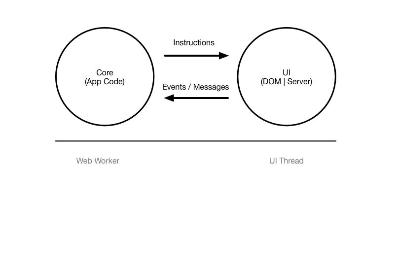
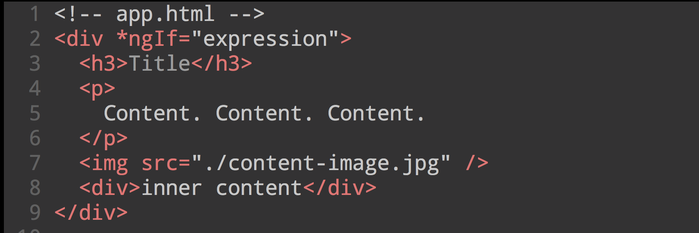
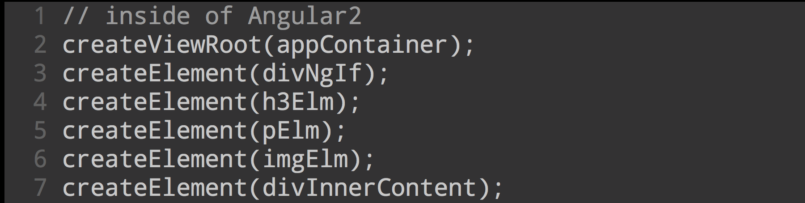
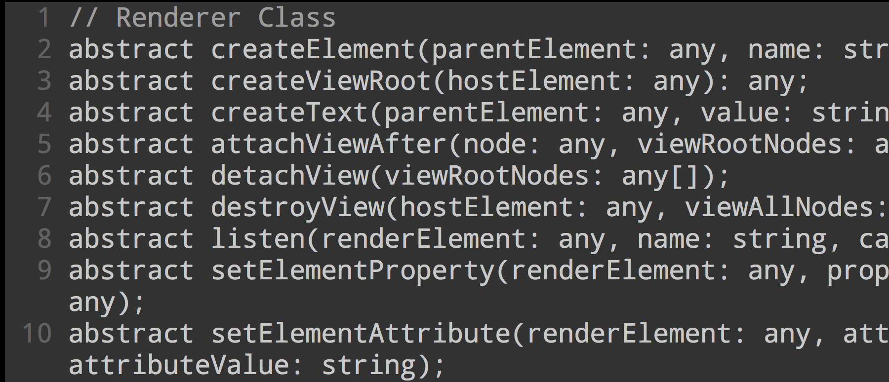
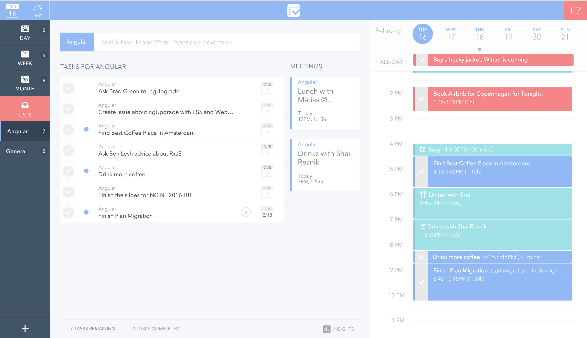

Rendering in Angular 2
@zizzamia
What is it rendering
HTML to native
HTML to native "pros and cons"
Angular 2
can do a step forward
One template implementation for all platforms?
Angular 2 Renderers
Angular 2 Renderers
How this renders works
Separation = support for ...
Angular 2 has a Renderer class
HTML and CSS code is parsed at compile time
This allows for full a understanding of the HTML code
Writing a custom renderer
Let's experiment!
Custom canvas experimentation (ReactCanvas)
code example canvas
Multiple renderers per app
- Electron
- Native script
Electron
Native script
Work in progress
Plan
Plan
Recap
- End goal is to have plug/play for support for Angular 2 renderers
- Read this article to learn more … yearofmoo
- Use this github project to get started to https://github.com/matsko/angular2-multi-client
Special thanks to
- Matias @yearofmoo